讓 AI 交出可審查產物的四個提問轉換
從可行性評估到資安稽核，一小時走完 AI 開發生命週期
差別不在模型，在問法。
決定 AI 交付品質的
不是提示詞寫得漂不漂亮
是你有沒有要求它交出一份可以被審查的產物
「能不能做」換來一句話——沒得反駁、沒得追蹤、沒得改
「可行性評估報告」換來一份文件——可以開會、可以被打槍、可以修
每站：一句對比 → 一段原理 → 一個產物 → 一題測驗
每一段結束我出一題
留 Email，今天所有提示詞全文＋SOP 範本＋資安稽核清單，我整包寄給你
Q0 暖身題
你現在最常用哪一句問 AI 幫你寫程式？
A.「幫我寫一個 XXX」 B.「這個能不能做？」
C.「幫我看看有沒有問題」 D. 我會先請它分析、寫計畫，才動手
yes/no 題只會換來 yes。
指定產出格式，它才非攤開不可。
針對以下需求，幫我做一份可行性評估報告： 【貼上需求描述】 報告需包含： 1. 技術可行性：現有技術能否達成，需要哪些關鍵元件 2. 難易度分級：把需求拆成子項目，每項標 S / M / L 並說明理由 3. 風險與未知數：哪些地方我現在無法確定，可能會爆的點在哪 4. 前置資源：需要的環境、帳號、授權、資料、外部服務 5. 建議驗證順序：哪一塊該先做 spike 驗證，為什麼 最後請標出：你對這份評估最沒把握的三件事。
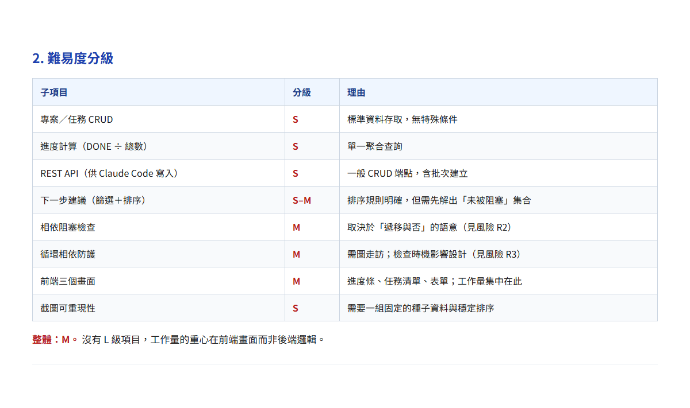
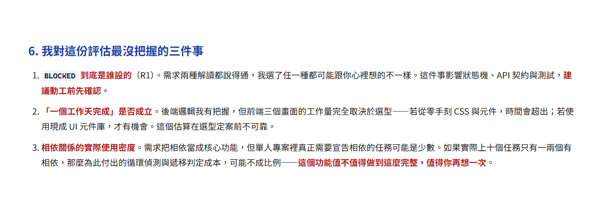
Q1
A. 這個功能能不能做？ B. 這個功能難不難？
C. 幫我做可行性評估報告：技術可行性、難易度分級、風險與未知數、建議驗證順序
D. 這個功能大概要多久？
我要做【需求】。我的限制是： - 開發環境：【例：Windows + PowerShell】 - 團隊技能：【例：熟 Java，前端只有一人】 - 部署環境：【例：公司內網，不能連外】 - 時程與人力：【…】 請列出 2-4 個可行的技術選型方案，每個方案說明： 優點、缺點、適用情境、在我上述限制下的契合度。 最後給出你的推薦與理由，並說明什麼情況下你會改推薦別的方案。
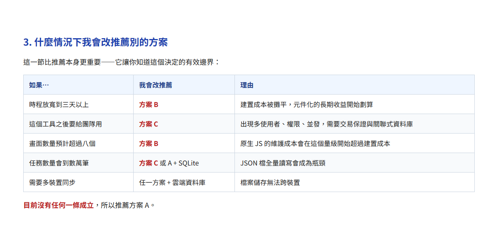
採用【選定方案】。請寫一份開發計畫： 1. 模組拆解：每個模組的職責與相依關係 2. 里程碑：分幾個階段，每階段的產出是什麼 3. 每階段的驗收標準：怎樣算做完（要可驗證，不要「功能正常」這種寫法） 4. 風險點與對應的先行驗證 先不要寫程式碼。
計畫改一行，程式碼改一天。
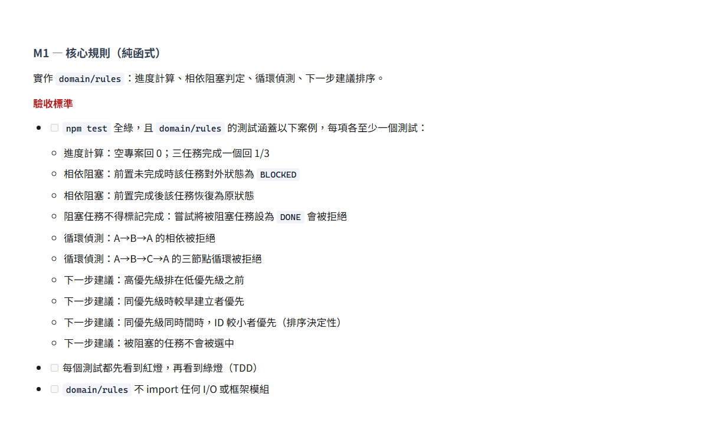
Q2
A. 節省 token B. 計畫是便宜的中間產物——計畫改一行，程式碼改一天
C. AI 寫程式速度太慢 D. 避免版權爭議
用 TDD 實作【功能】： 1. 先寫測試，跑一次，讓我看到它是紅的（失敗訊息貼給我） 2. 再寫最小實作讓測試轉綠 3. 最後重構，重構後測試必須維持綠 測試要涵蓋：正常路徑、邊界值、錯誤分支。 在我確認紅燈之前，不要寫實作程式碼。
寫完程式再補的測試，是實作的鏡子，不是規格。
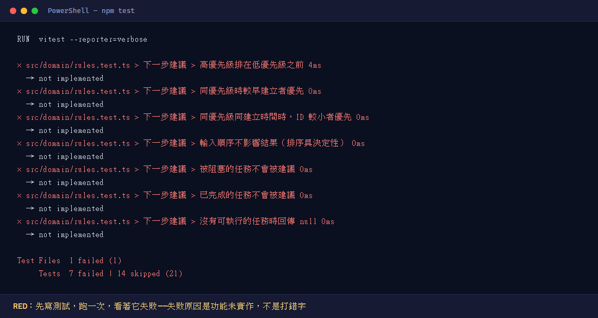
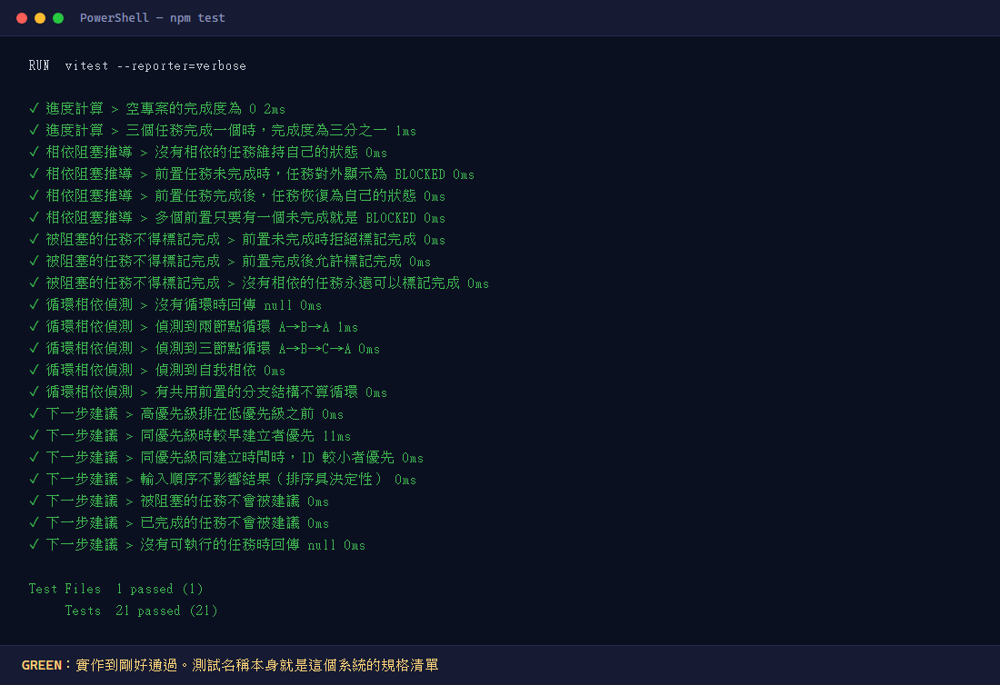
用 Playwright 幫我寫 e2e 測試腳本，涵蓋這幾條使用者流程： 【流程 1】【流程 2】【流程 3】 要求： - 寫成可重跑的腳本檔，放在 e2e/ 目錄下，加中文註解說明用途 - 不要用一次性的互動指令 - 每個腳本可獨立執行，失敗時輸出足以定位問題的訊息
一次性指令跑完就沒了。腳本是資產。
LIVE 6 秒
PS> npx playwright test
備援：若當場失敗，直接播預錄影片，不要現場除錯
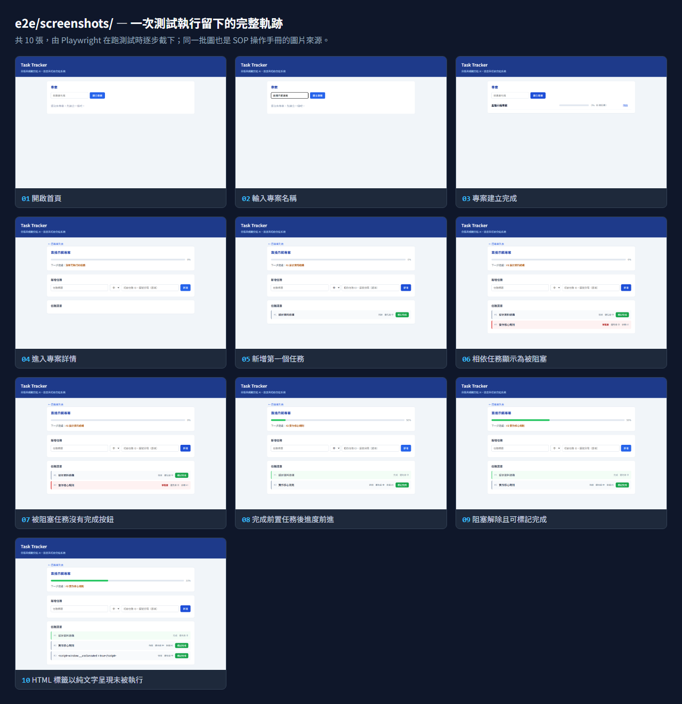
在 e2e 腳本的每個關鍵步驟後加上截圖，存到 e2e/screenshots/ 並依步驟編號命名。
跑完後，用這批截圖幫我產出一份操作 SOP 文件：
每個步驟一張圖 + 操作說明 + 預期結果 + 常見錯誤。
輸出成 Markdown。
同一次執行：一份給機器看，一份給人看。
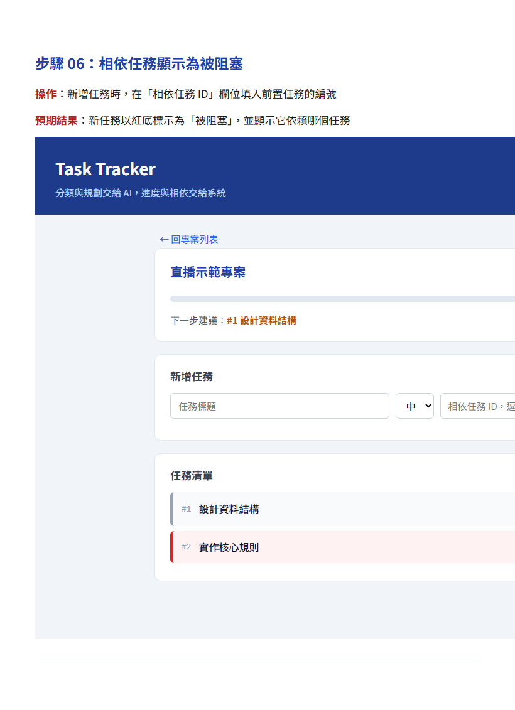
Q3
A. 測試比實作好寫
B. 先寫程式再補測試，AI 傾向寫出「證明自己對」的測試
C. 這樣執行比較快 D. 測試框架規定要這樣
對照 OWASP Top 10:2025 與 CWE Top 25（2025 版）逐項檢查這份程式碼， 輸出表格：分類代號、是否命中、程式位置、風險等級、修補建議。 沒命中的項目也要列出，並說明為什麼不適用。
OWASP Top 10:2025 — 2025/11 發表、2026/01 定版。新增 A03 軟體供應鏈失效、A10 例外狀況處理不當，SSRF 併入 A01。
CWE Top 25（2025 版）— 2025/12 CISA／MITRE 發布，取樣 3.9 萬個漏洞。前三名：XSS、SQL Injection、CSRF。
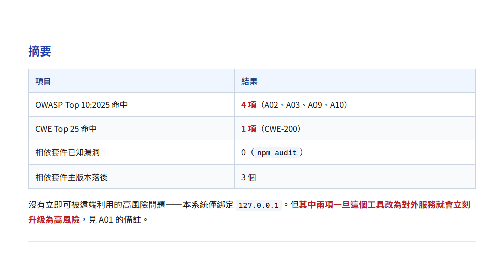
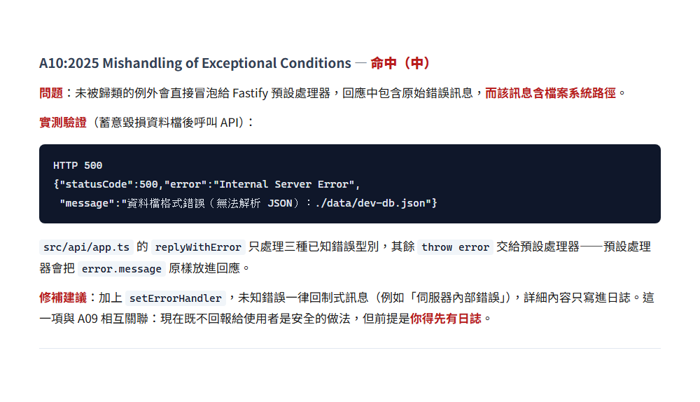
列出本專案所有相依套件與版本，逐一查有無已知 CVE， 標出 CVSS 分數、影響說明與建議升級版本，依風險排序。
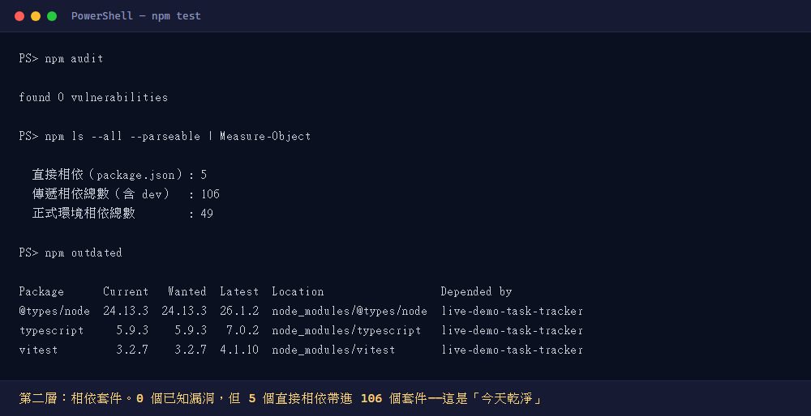
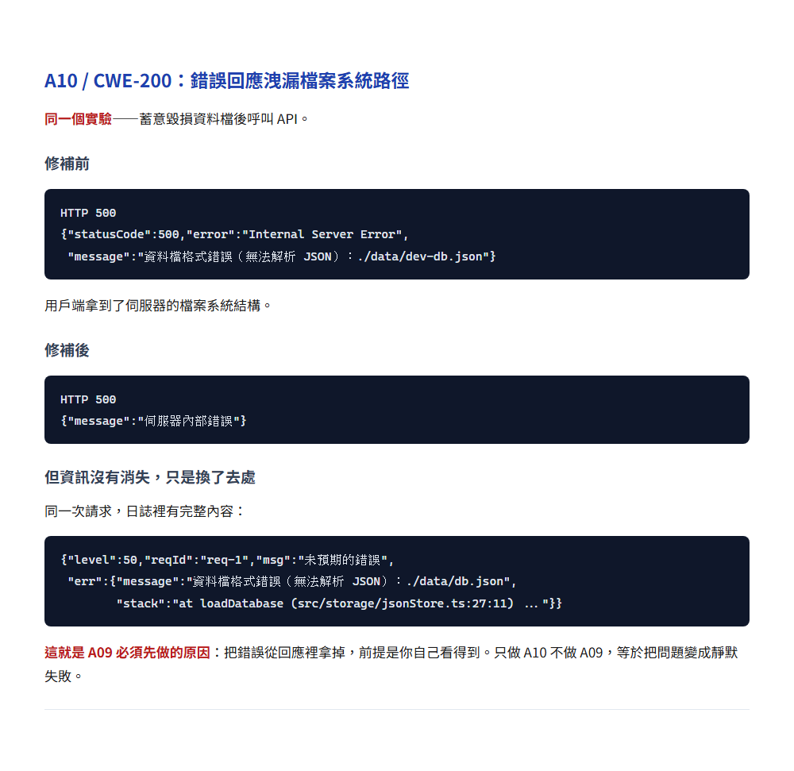
AI 稽核取代不了滲透測試
它的價值是便宜的第一道網
在你花錢請人測之前，先把明顯的東西掃掉
稽核全綠不等於安全
只等於「清單上的項目都看過了」
Q4
A. 幫我看看有沒有資安漏洞 B. 幫我找出所有的漏洞
C. 對照 OWASP Top 10:2025 逐項檢查，沒命中的項目也要列出並說明為什麼不適用
D. 幫我做一次滲透測試
A.「幫我寫一個 XXX」
B.「這個能不能做？」
C.「幫我看看有沒有問題」
這三句話，正好就是今天要換掉的三句
（切到 EXAM 畫面顯示 Q0 統計）
| 階段 | ❌ 別這樣問 | ✅ 這樣問 | 你會拿到的產物 |
|---|---|---|---|
| 想法期 | 這個能不能做？ | 做一份可行性評估報告，含難易度分級、風險、驗證順序 | 可進會議、可被打槍的評估文件 |
| 設計期 | 幫我寫一個 X | 先選型分析 → 再開發計畫 → 才實作 | 選型比較表 + 里程碑與驗收標準 |
| 開發驗收 | 幫我測試有沒有問題 | TDD 紅綠重構 → Playwright 腳本 → 截圖生 SOP | 回歸測試資產 + 操作手冊 |
| 上線前 | 幫我看有沒有漏洞 | 對照 OWASP／CWE 逐項稽核，含未命中原因 | 有覆蓋率的稽核表 |
這張可以拍。
這四招的共通點只有一個
你要求了一份別人可以審查的東西
把「一句話回答」換成「可審查產物」
Q5 離場題 今天四站，你最想馬上用的是哪一個？
（開著就好，散場前填，我照你選的寄對應的東西給你）
謝謝大家